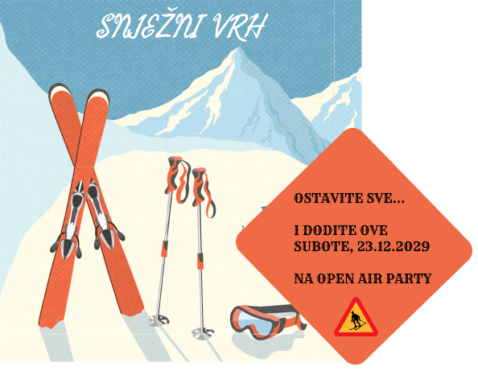

Tekst
Za dio s tekstom sam napravio dvije stvari. Prvo sam sredio tekst na samoj web stranici u HTML-u i CSS-u, a onda sam u Figmi napravio pozivnicu koja poziva ljude na party u našem restoranu.
1. Oblikovanje teksta na stranici (HTML/CSS)
Stranicu sam pisao u VS Codeu. Prvo sam u HTML-u posložio sav tekst, a tek onda sam u style.css namještao kako izgleda.
Kako sam složio tekst u HTML-u
- ime restorana je u <h1> jer je to glavni naslov
- naslovi dijelova (Dobrodošli, Naš restoran, Cjenik...) su u <h2>
- obični tekst je u <p> odlomcima da nije sve u jednom komadu
- bitne stvari kao ime restorana i radno vrijeme sam podebljao s <b>
- jela sam stavio u listu <ul> da se lakše čita
- cijene soba sam stavio u tablicu jer je tako preglednije nego u rečenici
Kako sam uredio tekst u CSS-u
Za cijelu stranicu sam stavio font Arial jer se lako čita na ekranu. Glavni naslov sam htio da se razlikuje pa sam mu dao Georgia font i veličinu 32px, tako izgleda malo "otmjenije" kao za restoran. Podnaslovi h2 su plavi (#2b5d84) da pašu uz logo i zaglavlje.
Tekst nije skroz crn nego tamno sivi (#333333) jer mi je tako bilo ugodnije za oči na svijetloplavoj pozadini. Da tekst ne bi bio preširok na velikom ekranu, sadržaj sam stavio u main koji je širok najviše 800px i centriran.
Linkove u izborniku sam napravio bijele i maknuo im podcrtavanje, a kad se pređe mišem preko njih dobiju svjetliju plavu pozadinu. U tablici sam svakoj ćeliji dao malo razmaka i sivi obrub da se tekst ne lijepi.
2. Pozivnica za party (Figma)
Za pozivnicu sam na kraju uzeo Figmu umjesto Scribusa jer mi je jednostavnija za korištenje. Našao sam gotovu vektorsku sliku sa skijama i planinama u .eps formatu. Figma ne može otvoriti .eps, pa sam ga prvo pretvorio u .svg i onda ubacio u Figmu. Tako je svaki dio slike postao poseban sloj koji mogu mijenjati. Engleski tekst koji je bio na slici sam obrisao.
Onda sam nacrtao kvadrat, zaobljio mu kutove i okrenuo ga za 45° da izgleda kao prometni znak. Pomaknuo sam ga skroz desno da malo viri van slike. Boju sam pipetom uzeo sa skija da sve paše zajedno.
Na kvadrat sam napisao tekst pozivnice u vintage fontu, a na dno sam stavio mali znak upozorenja sa skijašem. Gore na nebo sam dodao ime restorana "Snježni Vrh" bijelim slovima u rukopisnom fontu da se lijepo vidi na plavoj pozadini. Na kraju sam sve izvezao kao PNG za stranicu.

Slike (GIMP)
Za galeriju sam skinuo četiri besplatne fotke s Pexelsa: restoran, sobu, snijeg i hranu. Sve sam ih obrađivao u GIMP-u.
Prvo sam svaku sliku smanjio na 800 px širine (Image - Scale Image) jer su originali bili ogromni i stranica bi se sporo učitavala. Onda sam ih malo izrezao s Crop alatom da maknem višak sa strane.
Kod boja sam se najviše igrao. Preko Colors - Brightness-Contrast sam malo posvijetlio slike koje su bile pretamne, a s Hue-Saturation sam pojačao boje da izgledaju toplije. Kod slike snijega sam u Colors - Color Temperature stavio hladniju boju da snijeg bude plaviji i više "zimski". Na slici hrane sam stavio Filters - Enhance - Sharpen (Unsharp Mask) da bude oštrija, a na slici sobe Filters - Light and Shadow - Vignette da su rubovi malo tamniji.
Na kraju sam ih izvezao kao JPG (File - Export As) s kvalitetom oko 85 da ne budu preteške.
Galeriju sam složio u HTML-u tako da su sve slike u jednom divu, a u CSS-u sam im dao istu veličinu i plavi obrub. Još sam dodao malo JavaScripta da se slika poveća kad se klikne na nju, a kad se klikne opet, zatvori se.
Grafika - logo (Figma)
Logo sam napravio u Figmi kao vektorsku grafiku. Htio sam nešto jednostavno što odmah pokazuje da je restoran u planinama, pa sam nacrtao dvije planine sa snijegom na vrhu.
Svaku planinu sam napravio od trokuta s Pen alatom i malo zaobljio donje kutove da ne izgleda preoštro. Veću planinu sam stavio naprijed, a manju iza nje i malo desno, da izgleda kao da je dalje. Snijeg na vrhovima sam nacrtao kao poseban oblik s cik-cak rubom na dnu, da izgleda kao da se snijeg topi niz planinu.
Za boje sam uzeo nekoliko nijansi plavo-sive: prednja planina je svjetlija, a stražnja tamnija, a snijeg je skoro bijel sa malo plave. Tako logo paše uz plave boje na stranici.
Imao sam problem što se iza loga vidio bijeli kvadrat, ali sam skužio da je to bijela pozadina od Framea pa sam joj maknuo Fill. Na kraju sam ga izvezao kao SVG (Export - SVG) jer ostaje oštar na svakoj veličini, i stavio ga u zaglavlje stranice.
Zvuk (Audacity + ElevenLabs)
Htio sam da se na stranici odmah čuje ugođaj mirne zimske večeri. Skinuo sam par besplatnih zvukova - zimsku oluju, pucketanje peći i kravlja zvona - i složio ih u Audacityju jedan preko drugog kao posebne trake. Namjestio sam glasnoću da bude mirno, skratio zapis i dodao Fade In i Fade Out.
Onda sam htio dodati i glas koji priča o zimskom ugođaju. Tekst sam sam napisao, a glas sam napravio u ElevenLabsu. Odabrao sam miran i topao glas i model koji zna hrvatski, stavio malo veću Stability da glas ne skače i skinuo ga kao MP3.
Taj MP3 sam ubacio u Audacity kao novu traku i pomaknuo ga par sekundi udesno da prvo krene snijeg i peć, a tek onda glas. Pozadinske zvukove sam malo utišao dok glas priča da se sve lijepo razumije. Na kraju sam sve izvezao kao jedan MP3 i stavio na stranicui.
Video (Shotcut)
Video sam napravio u Shotcutu. Skinuo sam nekoliko besplatnih isječaka koji pašu uz restoran - zasnježene planine, kuću u planinama snimljenu iz zraka, restoran iznutra, pogled kroz prozor sobe i skijalište.
Sve isječke sam ubacio u Playlist i onda ih povukao na timeline jedan za drugim. Svaki sam skratio da traje par sekundi, tako da je cijeli video kratak, oko 15 sekundi. Između isječaka sam dodao prijelaze tako da sam ih malo preklopio na timelineu, pa jedan lagano prelazi u drugi.
Na početak sam preko Filters - Text dodao natpis "Snježni Vrh", a na kraj veliki "Dobrodošli!" preko skijališta. Na kraju sam ga izvezao kao MP4 (Export - H.264) u 1920x1080 i stavio na stranicu.